ЛАБОРАТОРНАЯ РАБОТА № 14
НАСТРОЙКА ПАРАМЕТРОВ TCP/IP
Цель работы — изучить способы диагностики настроек стека протоколов TCP/ IP; получить сведения о настройке TCP/IP.
Теоретическая часть
На концептуальной модели взаимодействия открытых систем OSI основан стек протоколов TCP/IP (Transmission Control Protocol — протокол управления передачей / Internet Protocol — Интернет-протокол), который предоставляет ряд стандартов для связи компьютеров и сетей.
Стек протоколов TCP/IP — промышленный стандарт, который позволяет организовать сеть масштаба предприятия и связывать компьютеры, работающие под управлением различных операционных систем.
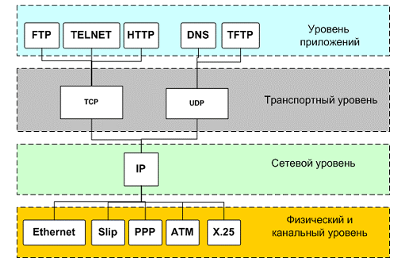
Рис. 13.1. Связь протоколов в стеке TCP/IP
Применение стека протоколов TCP/IP дает следующие преимущества:
1. поддерживается почти всеми операционными системами; почти все большие сети основаны на TCP/IP;
2. технология позволяет соединить разнородные системы;
3. надежная, расширяемая интегрированная среда на основе модели «клиент – сервер»;
4. получение доступа к ресурсам сети Интернет.
Каждый узел TCP/IP идентифицирован своим логическим IP-адресом, который идентифицирует положение компьютера в сети почти таким же способом, как номер дома идентифицирует дом на улице.
Реализация TCP/IP позволяет узлу TCP/IP использовать статический IP-адрес или получить IP-адрес автоматически с помощью DHCP-сервера (Dynamic Host Configuration Protocol — протокол динамической конфигурации хоста).
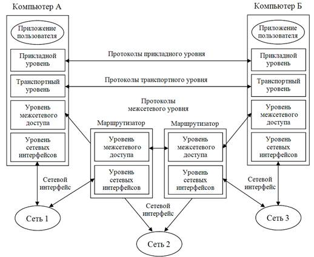
Рис. 13.2. Реализация стека TCP/IP
Сетезависымые и сетенезависимые уровни стека TCP/IP
Для простых сетевых конфигураций, основанных на локальных сетях (LAN, Local Area Network), он поддерживает автоматическое назначение IP-адресов.
По умолчанию компьютеры клиентов, работающие под управлением ОС Windows или Linux, получают информацию о настройке протокола TCP/IP автоматически от службы DHCP.
Однако даже в том случае, если в сети доступен DHCP-сервер, необходимо назначить статический IP-адрес для отдельных компьютеров в сети. Например, компьютеры с запущенной службой DHCP не могут быть клиентами DHCP, поэтому они должны иметь статический IP-адрес.
Если служба DHCP недоступна, можно настроить TCP/IP для использования статического IP-адреса.
Для каждой платы сетевого адаптера в компьютере, которая использует TCP/IP, можно установить IP-адрес, маску подсети и шлюз по умолчанию.
Ниже в таблице 1 описаны параметры, которые используются при настройке статического адреса TCP/IP.
Таблица 1. Параметры, используемые при настройке статического адреса TCP/IP
|
Параметр |
Описание |
|
IP-адрес |
Логический 32-битный адрес, который идентифицирует TCP/IP узел. Каждой плате сетевого адаптера в компьютере с запущенным протоколом TCP/IP необходим уникальный IP-адрес, такой, как 192.168.0.108. Каждый адрес имеет две части: ID сети, который идентифицирует все узлы в одной физической сети и ID узла, который идентифицирует узел в сети. В этом примере ID сети — 192.168.0, и ID узла — 108. |
|
Маска подсети |
Подсети делят большую сеть на множество физических сетей, соединенных маршрутизаторами. Маска подсети закрывает часть IP-адреса так, чтобы TCP/IP мог отличать ID сети от ID узла. При соединении узлов TCP/IP, маска подсети определяет, где находится узел получателя: в локальной или удаленной сети. Для связи в локальной сети компьютеры должны иметь одинаковую маску подсети. |
|
Шлюз по умолчанию |
Промежуточное устройство в локальной сети, на котором хранятся сетевые идентификаторы других сетей предприятия или Интернета. TCP/IP посылает пакеты в удаленную сеть через шлюз по умолчанию (если никакой другой маршрут не настроен), который затем пересылает пакеты другим шлюзам, пока пакет не достигнет шлюза, связанного с указанным адресатом. |
Если сервер с запущенной службой DHCP доступен в сети, он автоматически предоставляет информацию о параметрах TCP/IP клиентам DНСР.
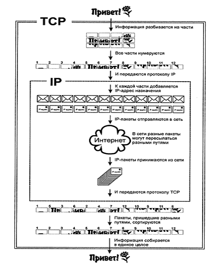
Рис. 13.3. Схема функционирования протоколов TCP/IP
Практическая часть
Задание 1. Проверьте работоспособность стека протоколов TCP/IP.
1. Запустите консоль: ПУСК – ПРОГРАММЫ – СТАНДАРТНЫЕ – КОМАНДНАЯ СТРОКА.
2. В командной строке введите команду: ipconfig /all | more.
3. Используя приведенную ниже информацию, создайте в своей папке текстовый документ со следующими данными:
|
Имя компьютера; |
|
|
Основной DNS-суффикс; |
|
|
Описание DNS-суффикса для подключения; |
|
|
Физический адрес; |
|
|
DHCP включен; |
|
|
Автоконфигурация включена; |
|
|
IP-адрес автоконфигурации; |
|
|
Маска подсети; |
|
|
Шлюз по умолчанию |
|
4. Убедитесь в работоспособности стека TCP/IP, отправив эхо-запросы на IP-адреса. Для этого воспользуйтесь командой ping:
a. отправьте эхо-запросы на локальный адрес компьютера (loopback) ping 127.0.0.1 (на экране должны появиться сообщения о полученном ответе от узла 127.0.0.1);
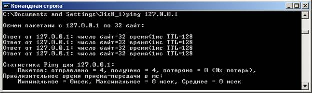
b. отправьте эхо-запрос по другому IP-адресу, например 192.168.4.1.
Задание 2. Настройте стек протоколов TCP/IP для использования статического IP-адреса.
1. Откройте окно Сетевые подключения: ПУСК – ПАНЕЛЬ УПРАВЛЕНИЕ – СЕТЬ И ПОДКЛЮЧЕНИЯ К ИНТЕРНЕТУ – СЕТЕВЫЕ ПОДКЛЮЧЕНИЯ.
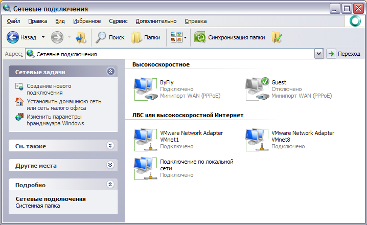
2. Откройте окно Подключения по локальной сети. Для этого можно воспользоваться контекстным меню.
3. В появившемся диалоговом окне на вкладке Общие откройте свойства протокола Интернета TCP/IP.
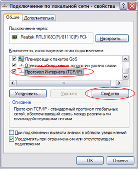
4. Щелкните переключатель Использовать следующий IP-адрес и введите в соответствующие поля данные: IP-адрес, Маску подсети, Основной шлюз, Предпочитаемый DNS.
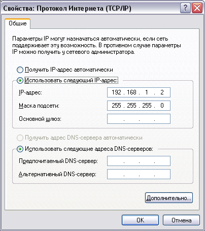
5. Примените параметры кнопкой ОК.
6. Закройте окно свойств подключения кнопкой ОК (если потребуется, то согласитесь на перезагрузку компьютера).
7. Проверьте работоспособность стека протоколов TCP/IP.
Задание 3. Настройте TCP/IP для автоматического получения IP-адреса.
1. Откройте окно Сетевые подключения: ПУСК – ПАНЕЛЬ УПРАВЛЕНИЕ – СЕТЬ И ПОДКЛЮЧЕНИЯ К ИНТЕРНЕТУ – СЕТЕВЫЕ ПОДКЛЮЧЕНИЯ.
2. Вызовите свойства Подключения по локальной сети.
3. Откройте свойства Протокол Интернета TCP/IP.
4. Установите переключатель Получить IP-адрес автоматически.
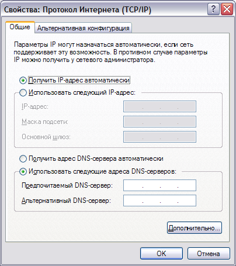
5. Примените параметры кнопкой ОК.
6. Закройте окно свойств подключения кнопкой ОК (если потребуется, то согласитесь на перезагрузку компьютера).
7. Проверьте работоспособность стека протоколов TCP/IP.
Задание 4. Получение нового IP-адреса.
1. Запустите консоль: ПУСК – ПРОГРАММЫ – СТАНДАРТНЫЕ – КОМАНДНАЯ СТРОКА.
2. Введите команду для сброса назначенных адресов: ipconfig /release.
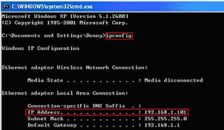
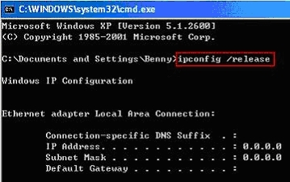
3. Введите команду для получения нового адреса: ipconfig / renew.
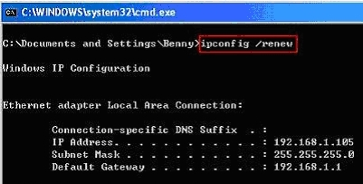
4.
Проверьте работоспособность стека протоколов TCP/IP.
Задание 5. Создайте IP-калькулятор в табличном процессоре для облегчения формирования маски подсети.
1. Откройте Microsoft Office Exel и сформируйте таблицу по следующему шаблону:
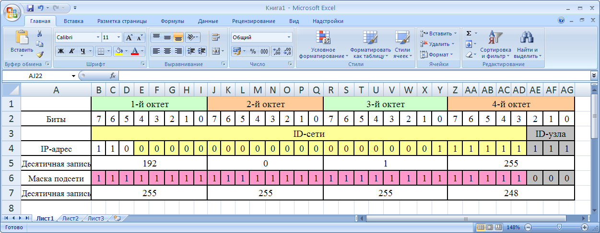
2. Далее необходимо ввести в ячейки B5, J5, R5, Z5 формулы для перевода двоичного представления IP-адреса в точечную десятичную нотацию по октетам. Введите в ячейку B5 формулу для преобразования 1-го октета IP-адреса в десятичную систему счисления:
3. Скопируйте введенную формулу в остальные ячейки (J5, R5, Z5), внося соответствующие изменения.
4. Самостоятельно введите в ячейки B5, J5, R5, Z5 формулы для преобразования маски подсети из двоичного представления в точечную десятичную нотацию.
5. Сохраните файл в своей папке.
Контрольные вопросы
1. Что представляет собой протокол TCP/IP.
2. IP-адреса.
3. Статический IP-адрес.
4. Автоматическое получение IP-адреса.
5. Управляющие протоколы Интернета.
6. Тестирование TCP/IP.
7. Маршрутизация пакетов в IP сетях.
8. Утилиты командной строки для работы с сетью.
9. Необходимый набор параметров для настройки локальной сети.
10. Необходимый набор параметров для настройки Интернета.
11. Необходимый набор параметров для выхода в другую сеть (посредствам прокси-сервера).